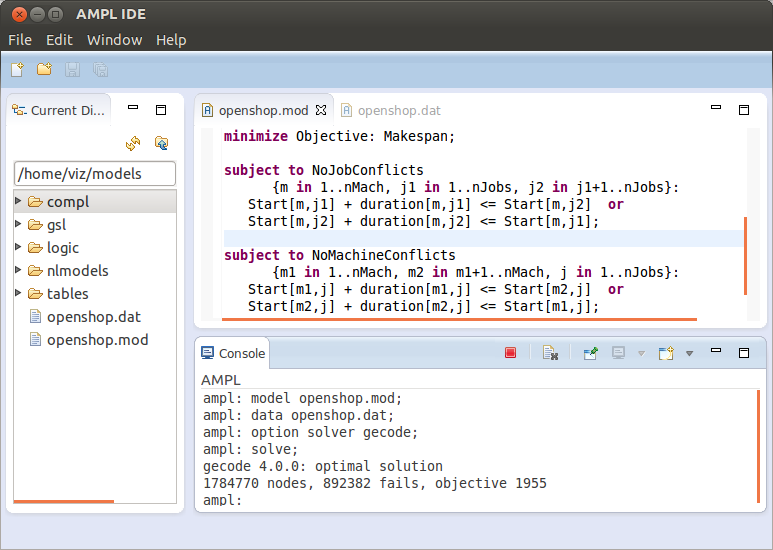
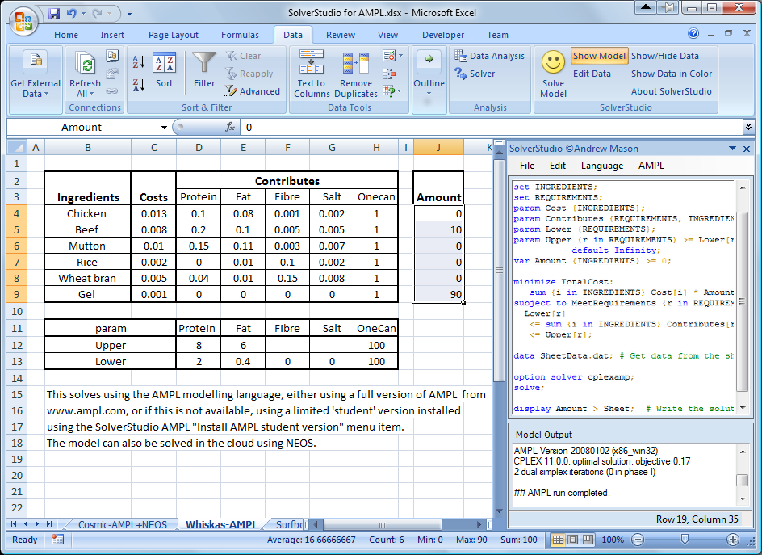

(> 1,400 members in [AMPL Google Group](https://groups.google.com/group/ampl) alone) - the most popular input format on [NEOS](http://www.neos-server.org/neos/)
(> 200,000 or 57% submissions in 2012) * AMPL is high-level, solver-independent and efficient. * Supports a variety of solvers and problem types: linear, mixed integer, quadratic, second-order cone, nonlinear, complementarity problems and more.
 - paper manufacturer
- paper manufacturer




`sum {p in PROD} Trans[i,j,p]` should be either zero or between `minload` and `limit[i,j]`. MIP formulation:
var Trans {ORIG,DEST,PROD} >= 0;
var Use {ORIG,DEST} binary;
subject to Multi {i in ORIG, j in DEST}:
sum {p in PROD} Trans[i,j,p] <= limit[i,j] * Use[i,j];
subject to Min_Ship {i in ORIG, j in DEST}:
sum {p in PROD} Trans[i,j,p] >= minload * Use[i,j];
Disjunctive constraint:
subject to Multi_Min_Ship {i in ORIG, j in DEST}:
sum {p in PROD} Trans[i,j,p] = 0 or
minload <= sum {p in PROD} Trans[i,j,p] <= limit[i,j];
Implication:
subject to Multi_Min_Ship {i in ORIG, j in DEST}:
sum {p in PROD} Trans[i,j,p] > 0 ==>
minload <= sum {p in PROD} Trans[i,j,p] <= limit[i,j];
subj to CapacityOfMachine {k in MACHINES}:
count {j in JOBS} (MachineForJob[j] = k) <= cap[k];
subj to CapacityOfMachine {k in MACHINES}:
numberof k in ({j in JOBS} MachineForJob[j]) <= cap[k];
- No need for \(n^2\) binary variables.
- All the
numberofconstraints can be converted into a singleIloDistributeconstraint inilogcp.